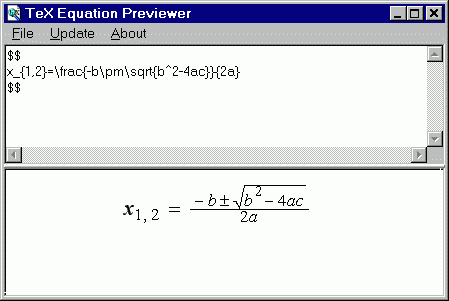

Description
Release Notes
Download
Screenshots
Orphanware
This software is no longer being developed or maintained. If you would like to take over project development, please let me know.Description
View and edit TeX equations before compiling your source. View your equation as you type in (almost) real time. Copies modified text to the clipboard for quick use in your favorite text editor. Requires Microsoft Internet Explorer 4.01 or higher and techexplorer Hypermedia Browser (both free). Source code included.For recent versions of Internet Explorer (v5.5 or higher) you will need the Integre version of techexplorer. Older releases (by IBM) operated as old (v4.7 or lower) Netscape-style which new versions of IE don't work with. However, the Integre release of techexplorer is an ActiveX control and should work with all versions of IE.
Release Notes
v1.0c October 29, 2000- catches exceptions (better stability)
- minimize with Esc key
- first release
Download
| TeX Equation Previewer version 1.0c for Windows 9x/ME/NT/2000/XP | |
| Freeware (with source code) |
Screenshots

TeX commands are entered in the top frame of the main window and IBM techexplorer renders the result in the IE frame underneath.